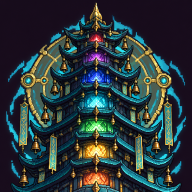
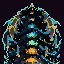

Duyệt bằng mắt: đúng võ hồn; mắt / mỏ (hoặc lõi, lưỡi) còn đọc ra ở cỡ thật 1×; không chữ, không khung; hình đậm, mực tối, không "mềm". Ảnh phóng bằng láng giềng gần nhất. so-sanh.png


Khung GIẢ đơn sắc (ảnh `card_sr/ssr/ur` chưa có trong repo): chỉ để xem chân dung nằm trong cửa sổ thẻ 96×152; nền, bố cục thật theo `cards.ts`. Phóng ×2.